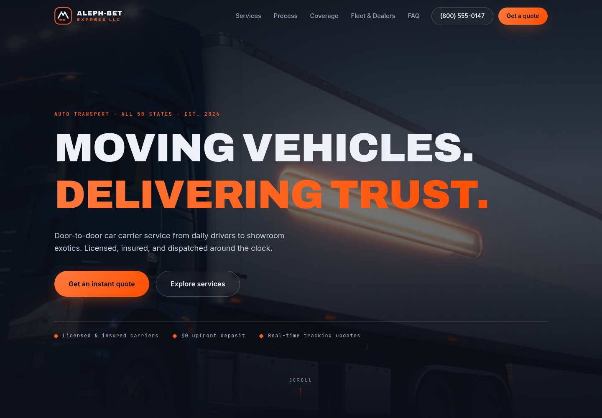

Websites
Aleph-Bet Express LLC
A nationwide vehicle-transport website for moving cars with clear service and quote paths.
Outcome: A clearer public path for nationwide vehicle transport, dealer fleet logistics, and quote requests.
Build summary: Built as a zero-build static marketing site with responsive service sections, animated route visuals, and a client-side quote flow.
Problem: Vehicle owners and dealer fleets needed a credible way to understand transport options and request service.
Capabilities: Auto transport, Dealer and fleet logistics, Quote workflow